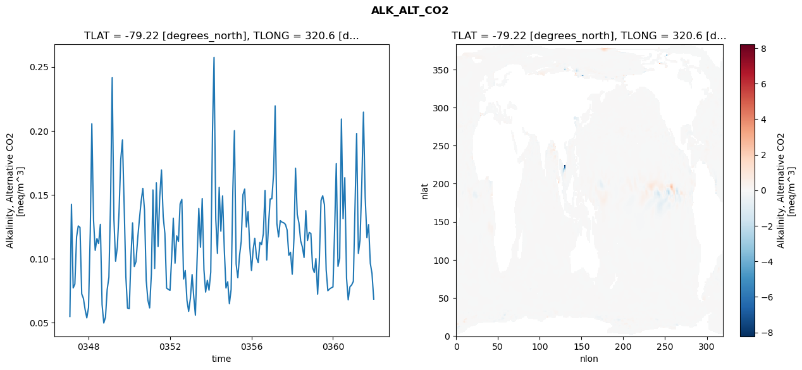
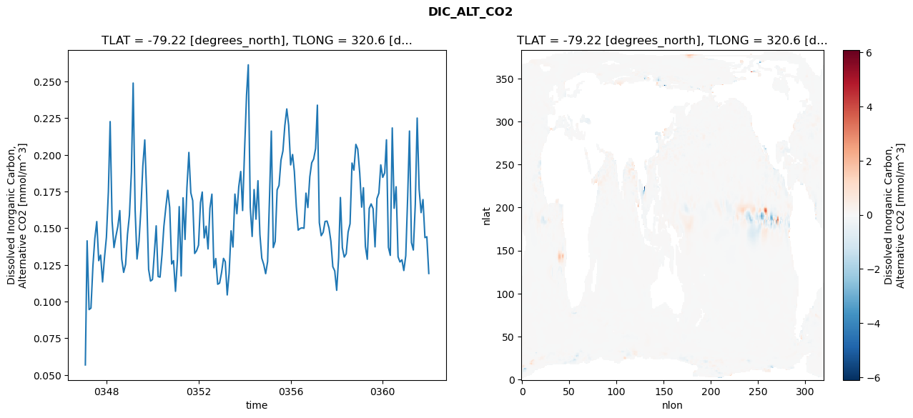
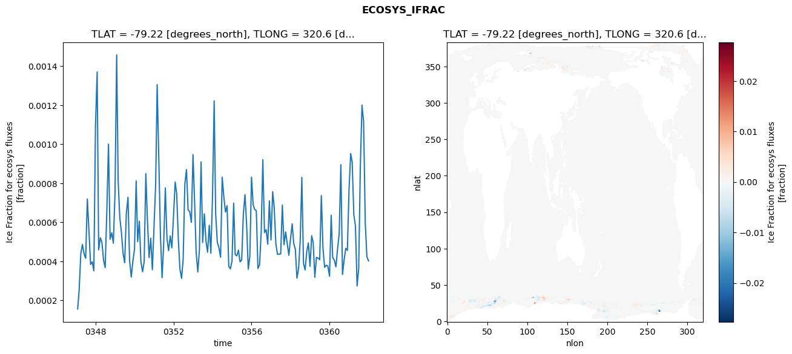
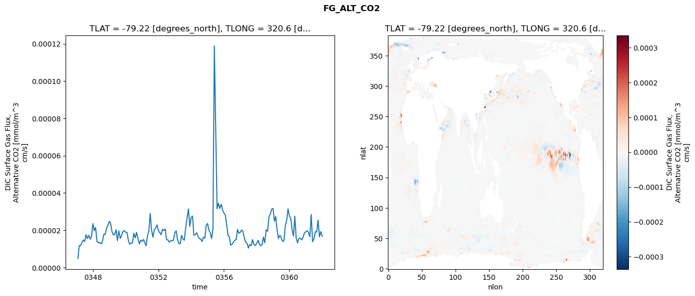

glb-dor_North_Atlantic_basin_040_1999-01-01_00160#
Simulation details#
Case: smyle.cdr-atlas-v0.glb-dor_North_Atlantic_basin_040_1999-01-01_00160.001
Basin: North_Atlantic_basin
Polygon: 40.0
Start date: 1999-01
Show code cell source Hide code cell source
import xarray as xr
import matplotlib.pyplot as plt
Show code cell source Hide code cell source
zarr_store = "/path/to/zarr/store"
# Parameters
zarr_store = "/global/cfs/projectdirs/m4746/Projects/Ocean-CDR-Atlas-v0/data/validation/smyle.cdr-atlas-v0.glb-dor_North_Atlantic_basin_040_1999-01-01_00160.001.validation.zarr"
Show code cell source Hide code cell source
%%time
ds_o = xr.open_zarr(zarr_store).compute()
ds_o
CPU times: user 550 ms, sys: 451 ms, total: 1 s
Wall time: 1.23 s
<xarray.Dataset> Size: 2MB
Dimensions: (nlat: 384, nlon: 320, time: 180)
Coordinates:
TLAT float64 8B -79.22
TLONG float64 8B 320.6
ULAT float64 8B -78.95
ULONG float64 8B 321.1
* time (time) object 1kB 0347-02-01 00:00:00 ... 0362-01-01 0...
z_t float32 4B 500.0
Dimensions without coordinates: nlat, nlon
Data variables:
ALK_ALT_CO2_diff (nlat, nlon) float32 492kB nan nan nan ... nan nan nan
ALK_ALT_CO2_rmse (time) float64 1kB 0.0549 0.1425 ... 0.08852 0.06845
DIC_ALT_CO2_diff (nlat, nlon) float32 492kB nan nan nan ... nan nan nan
DIC_ALT_CO2_rmse (time) float64 1kB 0.05687 0.1414 ... 0.1442 0.1192
ECOSYS_IFRAC_diff (nlat, nlon) float32 492kB nan nan nan ... nan nan nan
ECOSYS_IFRAC_rmse (time) float64 1kB 0.0001551 0.0002534 ... 0.0004019
FG_ALT_CO2_diff (nlat, nlon) float32 492kB nan nan nan ... nan nan nan
FG_ALT_CO2_rmse (time) float64 1kB 4.891e-06 1.181e-05 ... 1.671e-05xarray.Dataset
- nlat: 384
- nlon: 320
- time: 180
- TLAT()float64-79.22
- long_name :
- array of t-grid latitudes
- units :
- degrees_north
array(-79.22052261)
- TLONG()float64320.6
- long_name :
- array of t-grid longitudes
- units :
- degrees_east
array(320.56250892)
- ULAT()float64-78.95
- long_name :
- array of u-grid latitudes
- units :
- degrees_north
array(-78.95289509)
- ULONG()float64321.1
- long_name :
- array of u-grid longitudes
- units :
- degrees_east
array(321.12500894)
- time(time)object0347-02-01 00:00:00 ... 0362-01-...
- bounds :
- time_bound
- long_name :
- time
array([cftime.DatetimeNoLeap(347, 2, 1, 0, 0, 0, 0, has_year_zero=True), cftime.DatetimeNoLeap(347, 3, 1, 0, 0, 0, 0, has_year_zero=True), cftime.DatetimeNoLeap(347, 4, 1, 0, 0, 0, 0, has_year_zero=True), cftime.DatetimeNoLeap(347, 5, 1, 0, 0, 0, 0, has_year_zero=True), cftime.DatetimeNoLeap(347, 6, 1, 0, 0, 0, 0, has_year_zero=True), cftime.DatetimeNoLeap(347, 7, 1, 0, 0, 0, 0, has_year_zero=True), cftime.DatetimeNoLeap(347, 8, 1, 0, 0, 0, 0, has_year_zero=True), cftime.DatetimeNoLeap(347, 9, 1, 0, 0, 0, 0, has_year_zero=True), cftime.DatetimeNoLeap(347, 10, 1, 0, 0, 0, 0, has_year_zero=True), cftime.DatetimeNoLeap(347, 11, 1, 0, 0, 0, 0, has_year_zero=True), cftime.DatetimeNoLeap(347, 12, 1, 0, 0, 0, 0, has_year_zero=True), cftime.DatetimeNoLeap(348, 1, 1, 0, 0, 0, 0, has_year_zero=True), cftime.DatetimeNoLeap(348, 2, 1, 0, 0, 0, 0, has_year_zero=True), cftime.DatetimeNoLeap(348, 3, 1, 0, 0, 0, 0, has_year_zero=True), cftime.DatetimeNoLeap(348, 4, 1, 0, 0, 0, 0, has_year_zero=True), cftime.DatetimeNoLeap(348, 5, 1, 0, 0, 0, 0, has_year_zero=True), cftime.DatetimeNoLeap(348, 6, 1, 0, 0, 0, 0, has_year_zero=True), cftime.DatetimeNoLeap(348, 7, 1, 0, 0, 0, 0, has_year_zero=True), cftime.DatetimeNoLeap(348, 8, 1, 0, 0, 0, 0, has_year_zero=True), cftime.DatetimeNoLeap(348, 9, 1, 0, 0, 0, 0, has_year_zero=True), cftime.DatetimeNoLeap(348, 10, 1, 0, 0, 0, 0, has_year_zero=True), cftime.DatetimeNoLeap(348, 11, 1, 0, 0, 0, 0, has_year_zero=True), cftime.DatetimeNoLeap(348, 12, 1, 0, 0, 0, 0, has_year_zero=True), cftime.DatetimeNoLeap(349, 1, 1, 0, 0, 0, 0, has_year_zero=True), cftime.DatetimeNoLeap(349, 2, 1, 0, 0, 0, 0, has_year_zero=True), cftime.DatetimeNoLeap(349, 3, 1, 0, 0, 0, 0, has_year_zero=True), cftime.DatetimeNoLeap(349, 4, 1, 0, 0, 0, 0, has_year_zero=True), cftime.DatetimeNoLeap(349, 5, 1, 0, 0, 0, 0, has_year_zero=True), cftime.DatetimeNoLeap(349, 6, 1, 0, 0, 0, 0, has_year_zero=True), cftime.DatetimeNoLeap(349, 7, 1, 0, 0, 0, 0, has_year_zero=True), cftime.DatetimeNoLeap(349, 8, 1, 0, 0, 0, 0, has_year_zero=True), cftime.DatetimeNoLeap(349, 9, 1, 0, 0, 0, 0, has_year_zero=True), cftime.DatetimeNoLeap(349, 10, 1, 0, 0, 0, 0, has_year_zero=True), cftime.DatetimeNoLeap(349, 11, 1, 0, 0, 0, 0, has_year_zero=True), cftime.DatetimeNoLeap(349, 12, 1, 0, 0, 0, 0, has_year_zero=True), cftime.DatetimeNoLeap(350, 1, 1, 0, 0, 0, 0, has_year_zero=True), cftime.DatetimeNoLeap(350, 2, 1, 0, 0, 0, 0, has_year_zero=True), cftime.DatetimeNoLeap(350, 3, 1, 0, 0, 0, 0, has_year_zero=True), cftime.DatetimeNoLeap(350, 4, 1, 0, 0, 0, 0, has_year_zero=True), cftime.DatetimeNoLeap(350, 5, 1, 0, 0, 0, 0, has_year_zero=True), cftime.DatetimeNoLeap(350, 6, 1, 0, 0, 0, 0, has_year_zero=True), cftime.DatetimeNoLeap(350, 7, 1, 0, 0, 0, 0, has_year_zero=True), cftime.DatetimeNoLeap(350, 8, 1, 0, 0, 0, 0, has_year_zero=True), cftime.DatetimeNoLeap(350, 9, 1, 0, 0, 0, 0, has_year_zero=True), cftime.DatetimeNoLeap(350, 10, 1, 0, 0, 0, 0, has_year_zero=True), cftime.DatetimeNoLeap(350, 11, 1, 0, 0, 0, 0, has_year_zero=True), cftime.DatetimeNoLeap(350, 12, 1, 0, 0, 0, 0, has_year_zero=True), cftime.DatetimeNoLeap(351, 1, 1, 0, 0, 0, 0, has_year_zero=True), cftime.DatetimeNoLeap(351, 2, 1, 0, 0, 0, 0, has_year_zero=True), cftime.DatetimeNoLeap(351, 3, 1, 0, 0, 0, 0, has_year_zero=True), cftime.DatetimeNoLeap(351, 4, 1, 0, 0, 0, 0, has_year_zero=True), cftime.DatetimeNoLeap(351, 5, 1, 0, 0, 0, 0, has_year_zero=True), cftime.DatetimeNoLeap(351, 6, 1, 0, 0, 0, 0, has_year_zero=True), cftime.DatetimeNoLeap(351, 7, 1, 0, 0, 0, 0, has_year_zero=True), cftime.DatetimeNoLeap(351, 8, 1, 0, 0, 0, 0, has_year_zero=True), cftime.DatetimeNoLeap(351, 9, 1, 0, 0, 0, 0, has_year_zero=True), cftime.DatetimeNoLeap(351, 10, 1, 0, 0, 0, 0, has_year_zero=True), cftime.DatetimeNoLeap(351, 11, 1, 0, 0, 0, 0, has_year_zero=True), cftime.DatetimeNoLeap(351, 12, 1, 0, 0, 0, 0, has_year_zero=True), cftime.DatetimeNoLeap(352, 1, 1, 0, 0, 0, 0, has_year_zero=True), cftime.DatetimeNoLeap(352, 2, 1, 0, 0, 0, 0, has_year_zero=True), cftime.DatetimeNoLeap(352, 3, 1, 0, 0, 0, 0, has_year_zero=True), cftime.DatetimeNoLeap(352, 4, 1, 0, 0, 0, 0, has_year_zero=True), cftime.DatetimeNoLeap(352, 5, 1, 0, 0, 0, 0, has_year_zero=True), cftime.DatetimeNoLeap(352, 6, 1, 0, 0, 0, 0, has_year_zero=True), cftime.DatetimeNoLeap(352, 7, 1, 0, 0, 0, 0, has_year_zero=True), cftime.DatetimeNoLeap(352, 8, 1, 0, 0, 0, 0, has_year_zero=True), cftime.DatetimeNoLeap(352, 9, 1, 0, 0, 0, 0, has_year_zero=True), cftime.DatetimeNoLeap(352, 10, 1, 0, 0, 0, 0, has_year_zero=True), cftime.DatetimeNoLeap(352, 11, 1, 0, 0, 0, 0, has_year_zero=True), cftime.DatetimeNoLeap(352, 12, 1, 0, 0, 0, 0, has_year_zero=True), cftime.DatetimeNoLeap(353, 1, 1, 0, 0, 0, 0, has_year_zero=True), cftime.DatetimeNoLeap(353, 2, 1, 0, 0, 0, 0, has_year_zero=True), cftime.DatetimeNoLeap(353, 3, 1, 0, 0, 0, 0, has_year_zero=True), cftime.DatetimeNoLeap(353, 4, 1, 0, 0, 0, 0, has_year_zero=True), cftime.DatetimeNoLeap(353, 5, 1, 0, 0, 0, 0, has_year_zero=True), cftime.DatetimeNoLeap(353, 6, 1, 0, 0, 0, 0, has_year_zero=True), cftime.DatetimeNoLeap(353, 7, 1, 0, 0, 0, 0, has_year_zero=True), cftime.DatetimeNoLeap(353, 8, 1, 0, 0, 0, 0, has_year_zero=True), cftime.DatetimeNoLeap(353, 9, 1, 0, 0, 0, 0, has_year_zero=True), cftime.DatetimeNoLeap(353, 10, 1, 0, 0, 0, 0, has_year_zero=True), cftime.DatetimeNoLeap(353, 11, 1, 0, 0, 0, 0, has_year_zero=True), cftime.DatetimeNoLeap(353, 12, 1, 0, 0, 0, 0, has_year_zero=True), cftime.DatetimeNoLeap(354, 1, 1, 0, 0, 0, 0, has_year_zero=True), cftime.DatetimeNoLeap(354, 2, 1, 0, 0, 0, 0, has_year_zero=True), cftime.DatetimeNoLeap(354, 3, 1, 0, 0, 0, 0, has_year_zero=True), cftime.DatetimeNoLeap(354, 4, 1, 0, 0, 0, 0, has_year_zero=True), cftime.DatetimeNoLeap(354, 5, 1, 0, 0, 0, 0, has_year_zero=True), cftime.DatetimeNoLeap(354, 6, 1, 0, 0, 0, 0, has_year_zero=True), cftime.DatetimeNoLeap(354, 7, 1, 0, 0, 0, 0, has_year_zero=True), cftime.DatetimeNoLeap(354, 8, 1, 0, 0, 0, 0, has_year_zero=True), cftime.DatetimeNoLeap(354, 9, 1, 0, 0, 0, 0, has_year_zero=True), cftime.DatetimeNoLeap(354, 10, 1, 0, 0, 0, 0, has_year_zero=True), cftime.DatetimeNoLeap(354, 11, 1, 0, 0, 0, 0, has_year_zero=True), cftime.DatetimeNoLeap(354, 12, 1, 0, 0, 0, 0, has_year_zero=True), cftime.DatetimeNoLeap(355, 1, 1, 0, 0, 0, 0, has_year_zero=True), cftime.DatetimeNoLeap(355, 2, 1, 0, 0, 0, 0, has_year_zero=True), cftime.DatetimeNoLeap(355, 3, 1, 0, 0, 0, 0, has_year_zero=True), cftime.DatetimeNoLeap(355, 4, 1, 0, 0, 0, 0, has_year_zero=True), cftime.DatetimeNoLeap(355, 5, 1, 0, 0, 0, 0, has_year_zero=True), cftime.DatetimeNoLeap(355, 6, 1, 0, 0, 0, 0, has_year_zero=True), cftime.DatetimeNoLeap(355, 7, 1, 0, 0, 0, 0, has_year_zero=True), cftime.DatetimeNoLeap(355, 8, 1, 0, 0, 0, 0, has_year_zero=True), cftime.DatetimeNoLeap(355, 9, 1, 0, 0, 0, 0, has_year_zero=True), cftime.DatetimeNoLeap(355, 10, 1, 0, 0, 0, 0, has_year_zero=True), cftime.DatetimeNoLeap(355, 11, 1, 0, 0, 0, 0, has_year_zero=True), cftime.DatetimeNoLeap(355, 12, 1, 0, 0, 0, 0, has_year_zero=True), cftime.DatetimeNoLeap(356, 1, 1, 0, 0, 0, 0, has_year_zero=True), cftime.DatetimeNoLeap(356, 2, 1, 0, 0, 0, 0, has_year_zero=True), cftime.DatetimeNoLeap(356, 3, 1, 0, 0, 0, 0, has_year_zero=True), cftime.DatetimeNoLeap(356, 4, 1, 0, 0, 0, 0, has_year_zero=True), cftime.DatetimeNoLeap(356, 5, 1, 0, 0, 0, 0, has_year_zero=True), cftime.DatetimeNoLeap(356, 6, 1, 0, 0, 0, 0, has_year_zero=True), cftime.DatetimeNoLeap(356, 7, 1, 0, 0, 0, 0, has_year_zero=True), cftime.DatetimeNoLeap(356, 8, 1, 0, 0, 0, 0, has_year_zero=True), cftime.DatetimeNoLeap(356, 9, 1, 0, 0, 0, 0, has_year_zero=True), cftime.DatetimeNoLeap(356, 10, 1, 0, 0, 0, 0, has_year_zero=True), cftime.DatetimeNoLeap(356, 11, 1, 0, 0, 0, 0, has_year_zero=True), cftime.DatetimeNoLeap(356, 12, 1, 0, 0, 0, 0, has_year_zero=True), cftime.DatetimeNoLeap(357, 1, 1, 0, 0, 0, 0, has_year_zero=True), cftime.DatetimeNoLeap(357, 2, 1, 0, 0, 0, 0, has_year_zero=True), cftime.DatetimeNoLeap(357, 3, 1, 0, 0, 0, 0, has_year_zero=True), cftime.DatetimeNoLeap(357, 4, 1, 0, 0, 0, 0, has_year_zero=True), cftime.DatetimeNoLeap(357, 5, 1, 0, 0, 0, 0, has_year_zero=True), cftime.DatetimeNoLeap(357, 6, 1, 0, 0, 0, 0, has_year_zero=True), cftime.DatetimeNoLeap(357, 7, 1, 0, 0, 0, 0, has_year_zero=True), cftime.DatetimeNoLeap(357, 8, 1, 0, 0, 0, 0, has_year_zero=True), cftime.DatetimeNoLeap(357, 9, 1, 0, 0, 0, 0, has_year_zero=True), cftime.DatetimeNoLeap(357, 10, 1, 0, 0, 0, 0, has_year_zero=True), cftime.DatetimeNoLeap(357, 11, 1, 0, 0, 0, 0, has_year_zero=True), cftime.DatetimeNoLeap(357, 12, 1, 0, 0, 0, 0, has_year_zero=True), cftime.DatetimeNoLeap(358, 1, 1, 0, 0, 0, 0, has_year_zero=True), cftime.DatetimeNoLeap(358, 2, 1, 0, 0, 0, 0, has_year_zero=True), cftime.DatetimeNoLeap(358, 3, 1, 0, 0, 0, 0, has_year_zero=True), cftime.DatetimeNoLeap(358, 4, 1, 0, 0, 0, 0, has_year_zero=True), cftime.DatetimeNoLeap(358, 5, 1, 0, 0, 0, 0, has_year_zero=True), cftime.DatetimeNoLeap(358, 6, 1, 0, 0, 0, 0, has_year_zero=True), cftime.DatetimeNoLeap(358, 7, 1, 0, 0, 0, 0, has_year_zero=True), cftime.DatetimeNoLeap(358, 8, 1, 0, 0, 0, 0, has_year_zero=True), cftime.DatetimeNoLeap(358, 9, 1, 0, 0, 0, 0, has_year_zero=True), cftime.DatetimeNoLeap(358, 10, 1, 0, 0, 0, 0, has_year_zero=True), cftime.DatetimeNoLeap(358, 11, 1, 0, 0, 0, 0, has_year_zero=True), cftime.DatetimeNoLeap(358, 12, 1, 0, 0, 0, 0, has_year_zero=True), cftime.DatetimeNoLeap(359, 1, 1, 0, 0, 0, 0, has_year_zero=True), cftime.DatetimeNoLeap(359, 2, 1, 0, 0, 0, 0, has_year_zero=True), cftime.DatetimeNoLeap(359, 3, 1, 0, 0, 0, 0, has_year_zero=True), cftime.DatetimeNoLeap(359, 4, 1, 0, 0, 0, 0, has_year_zero=True), cftime.DatetimeNoLeap(359, 5, 1, 0, 0, 0, 0, has_year_zero=True), cftime.DatetimeNoLeap(359, 6, 1, 0, 0, 0, 0, has_year_zero=True), cftime.DatetimeNoLeap(359, 7, 1, 0, 0, 0, 0, has_year_zero=True), cftime.DatetimeNoLeap(359, 8, 1, 0, 0, 0, 0, has_year_zero=True), cftime.DatetimeNoLeap(359, 9, 1, 0, 0, 0, 0, has_year_zero=True), cftime.DatetimeNoLeap(359, 10, 1, 0, 0, 0, 0, has_year_zero=True), cftime.DatetimeNoLeap(359, 11, 1, 0, 0, 0, 0, has_year_zero=True), cftime.DatetimeNoLeap(359, 12, 1, 0, 0, 0, 0, has_year_zero=True), cftime.DatetimeNoLeap(360, 1, 1, 0, 0, 0, 0, has_year_zero=True), cftime.DatetimeNoLeap(360, 2, 1, 0, 0, 0, 0, has_year_zero=True), cftime.DatetimeNoLeap(360, 3, 1, 0, 0, 0, 0, has_year_zero=True), cftime.DatetimeNoLeap(360, 4, 1, 0, 0, 0, 0, has_year_zero=True), cftime.DatetimeNoLeap(360, 5, 1, 0, 0, 0, 0, has_year_zero=True), cftime.DatetimeNoLeap(360, 6, 1, 0, 0, 0, 0, has_year_zero=True), cftime.DatetimeNoLeap(360, 7, 1, 0, 0, 0, 0, has_year_zero=True), cftime.DatetimeNoLeap(360, 8, 1, 0, 0, 0, 0, has_year_zero=True), cftime.DatetimeNoLeap(360, 9, 1, 0, 0, 0, 0, has_year_zero=True), cftime.DatetimeNoLeap(360, 10, 1, 0, 0, 0, 0, has_year_zero=True), cftime.DatetimeNoLeap(360, 11, 1, 0, 0, 0, 0, has_year_zero=True), cftime.DatetimeNoLeap(360, 12, 1, 0, 0, 0, 0, has_year_zero=True), cftime.DatetimeNoLeap(361, 1, 1, 0, 0, 0, 0, has_year_zero=True), cftime.DatetimeNoLeap(361, 2, 1, 0, 0, 0, 0, has_year_zero=True), cftime.DatetimeNoLeap(361, 3, 1, 0, 0, 0, 0, has_year_zero=True), cftime.DatetimeNoLeap(361, 4, 1, 0, 0, 0, 0, has_year_zero=True), cftime.DatetimeNoLeap(361, 5, 1, 0, 0, 0, 0, has_year_zero=True), cftime.DatetimeNoLeap(361, 6, 1, 0, 0, 0, 0, has_year_zero=True), cftime.DatetimeNoLeap(361, 7, 1, 0, 0, 0, 0, has_year_zero=True), cftime.DatetimeNoLeap(361, 8, 1, 0, 0, 0, 0, has_year_zero=True), cftime.DatetimeNoLeap(361, 9, 1, 0, 0, 0, 0, has_year_zero=True), cftime.DatetimeNoLeap(361, 10, 1, 0, 0, 0, 0, has_year_zero=True), cftime.DatetimeNoLeap(361, 11, 1, 0, 0, 0, 0, has_year_zero=True), cftime.DatetimeNoLeap(361, 12, 1, 0, 0, 0, 0, has_year_zero=True), cftime.DatetimeNoLeap(362, 1, 1, 0, 0, 0, 0, has_year_zero=True)], dtype=object) - z_t()float32500.0
- long_name :
- depth from surface to midpoint of layer
- positive :
- down
- units :
- centimeters
- valid_max :
- 537500.0
- valid_min :
- 500.0
array(500., dtype=float32)
- ALK_ALT_CO2_diff(nlat, nlon)float32nan nan nan nan ... nan nan nan nan
- cell_methods :
- time: mean
- grid_loc :
- 3111
- long_name :
- Alkalinity, Alternative CO2
- units :
- meq/m^3
array([[ nan, nan, nan, ..., nan, nan, nan], [ nan, nan, nan, ..., nan, nan, nan], [0.0949707 , 0.04541016, 0.02392578, ..., nan, nan, nan], ..., [ nan, nan, nan, ..., nan, nan, nan], [ nan, nan, nan, ..., nan, nan, nan], [ nan, nan, nan, ..., nan, nan, nan]], dtype=float32) - ALK_ALT_CO2_rmse(time)float640.0549 0.1425 ... 0.08852 0.06845
- cell_methods :
- time: mean
- grid_loc :
- 3111
- long_name :
- Alkalinity, Alternative CO2
- units :
- meq/m^3
array([0.054902 , 0.14254393, 0.07713898, 0.08020421, 0.11708608, 0.12562912, 0.12445117, 0.07252416, 0.06901924, 0.06021985, 0.05376892, 0.06187648, 0.12103741, 0.2054534 , 0.13006849, 0.10652799, 0.11577507, 0.11180386, 0.12685557, 0.0640936 , 0.04975727, 0.05427444, 0.0758083 , 0.08555721, 0.14737949, 0.24149297, 0.1308048 , 0.09808226, 0.10899979, 0.13598454, 0.17744369, 0.19287073, 0.14222103, 0.08583264, 0.06139668, 0.06093619, 0.10202441, 0.12801884, 0.09392816, 0.09767368, 0.11590414, 0.13055808, 0.14455709, 0.1549828 , 0.13802748, 0.08296719, 0.06752368, 0.06159583, 0.08807448, 0.15376766, 0.09241223, 0.1593307 , 0.10955603, 0.14844675, 0.16937476, 0.13289798, 0.1197354 , 0.07699551, 0.07608753, 0.07527595, 0.10218536, 0.13164598, 0.09655569, 0.11788056, 0.11342906, 0.14284118, 0.14636405, 0.08417632, 0.09081017, 0.0673215 , 0.05889198, 0.06904534, 0.08762649, 0.07107458, 0.05585057, 0.0990807 , 0.1392873 , 0.10898979, 0.14702401, 0.09133019, 0.07392721, 0.08308187, 0.07543465, 0.08952893, 0.19891448, 0.25736979, 0.13109492, 0.10412979, 0.1557546 , 0.12152317, 0.14912211, 0.10686724, 0.07712186, 0.0820051 , 0.06480745, 0.07603818, 0.15388989, 0.20007901, 0.09591647, 0.08511034, 0.10255069, 0.11362371, 0.15006024, 0.15446131, 0.12483968, 0.13674303, 0.10942993, 0.09082218, 0.10758272, 0.1160097 , 0.10105512, 0.09695148, 0.11270106, 0.11113415, 0.11941572, 0.15337458, 0.09902256, 0.12552415, 0.14676712, 0.14681722, 0.1664943 , 0.21946685, 0.12749488, 0.11706093, 0.12975129, 0.12858256, 0.12811375, 0.1268586 , 0.12245162, 0.10266755, 0.10503372, 0.08788915, 0.11591049, 0.17074578, 0.13455526, 0.12793073, 0.11400853, 0.10925718, 0.10101042, 0.13758661, 0.1142353 , 0.12053462, 0.11975351, 0.09304025, 0.08920059, 0.10008566, 0.07232899, 0.09802042, 0.14553839, 0.14925044, 0.14217777, 0.09129099, 0.0749996 , 0.07638272, 0.07726177, 0.07794253, 0.12501908, 0.17432006, 0.09408157, 0.10036759, 0.20915817, 0.13131481, 0.1633118 , 0.08500344, 0.06788975, 0.07809692, 0.07947092, 0.08227498, 0.14258665, 0.19788829, 0.10409455, 0.11448583, 0.15834294, 0.21456524, 0.14825801, 0.11654768, 0.12666152, 0.0964161 , 0.08852133, 0.06844648]) - DIC_ALT_CO2_diff(nlat, nlon)float32nan nan nan nan ... nan nan nan nan
- cell_methods :
- time: mean
- grid_loc :
- 3111
- long_name :
- Dissolved Inorganic Carbon, Alternative CO2
- units :
- mmol/m^3
array([[ nan, nan, nan, ..., nan, nan, nan], [ nan, nan, nan, ..., nan, nan, nan], [0.10571289, 0.05126953, 0.03320312, ..., nan, nan, nan], ..., [ nan, nan, nan, ..., nan, nan, nan], [ nan, nan, nan, ..., nan, nan, nan], [ nan, nan, nan, ..., nan, nan, nan]], dtype=float32) - DIC_ALT_CO2_rmse(time)float640.05687 0.1414 ... 0.1442 0.1192
- cell_methods :
- time: mean
- grid_loc :
- 3111
- long_name :
- Dissolved Inorganic Carbon, Alternative CO2
- units :
- mmol/m^3
array([0.0568719 , 0.14144565, 0.09460018, 0.09557808, 0.12428552, 0.14292431, 0.15456278, 0.12791655, 0.13172616, 0.11343701, 0.12975694, 0.14394235, 0.17484664, 0.22269523, 0.15499033, 0.13687106, 0.14468367, 0.15124345, 0.1620412 , 0.128972 , 0.11994465, 0.12542565, 0.14580746, 0.15898678, 0.18861548, 0.24895886, 0.16267577, 0.12906905, 0.14094583, 0.16237696, 0.19239263, 0.21019243, 0.17281542, 0.12196585, 0.11404721, 0.11504715, 0.13384885, 0.15165213, 0.11711945, 0.11670266, 0.13189891, 0.15135653, 0.1642735 , 0.17588439, 0.16420517, 0.1256368 , 0.12796246, 0.10703533, 0.12922305, 0.1647347 , 0.11753595, 0.17076691, 0.14241053, 0.17757778, 0.20167038, 0.17412585, 0.16883647, 0.13282351, 0.13465074, 0.13846354, 0.16753219, 0.17466551, 0.14344767, 0.15139656, 0.13593767, 0.16376996, 0.17322609, 0.12310777, 0.12938152, 0.11185936, 0.11263331, 0.11980954, 0.129487 , 0.12718771, 0.10457645, 0.11951739, 0.14824861, 0.13723443, 0.17328177, 0.15990063, 0.17836789, 0.18869197, 0.16209206, 0.20334554, 0.24058227, 0.26138056, 0.1643906 , 0.14443014, 0.17637121, 0.15621507, 0.18240521, 0.14578449, 0.12958508, 0.12529615, 0.1190529 , 0.12726183, 0.17180018, 0.21620309, 0.13686852, 0.14099884, 0.17614356, 0.17922875, 0.1964163 , 0.20269752, 0.2198899 , 0.23130857, 0.22012136, 0.19319293, 0.20025016, 0.1887186 , 0.16479925, 0.14872827, 0.14990341, 0.15027574, 0.1499878 , 0.17393683, 0.16413417, 0.18509243, 0.19462654, 0.19720436, 0.20434485, 0.23388841, 0.15378904, 0.14493017, 0.1472643 , 0.15464466, 0.1548938 , 0.15026537, 0.14114895, 0.12379401, 0.12096073, 0.10773143, 0.13007884, 0.17096138, 0.13673336, 0.13038063, 0.13261394, 0.14736533, 0.15307154, 0.19443959, 0.18962373, 0.2071666 , 0.20388914, 0.18779985, 0.16440292, 0.17760914, 0.13761717, 0.12889681, 0.16355056, 0.16660015, 0.16335937, 0.13734753, 0.17021989, 0.17400578, 0.19319359, 0.18471151, 0.18771615, 0.21026157, 0.13706425, 0.13154438, 0.21836762, 0.16363101, 0.17829463, 0.13051145, 0.12705161, 0.12848625, 0.12122091, 0.13125284, 0.17236389, 0.21624696, 0.14024808, 0.13519338, 0.16633762, 0.22510268, 0.17653128, 0.16067246, 0.16956041, 0.1436426 , 0.14420555, 0.11919539]) - ECOSYS_IFRAC_diff(nlat, nlon)float32nan nan nan nan ... nan nan nan nan
- cell_methods :
- time: mean
- grid_loc :
- 2110
- long_name :
- Ice Fraction for ecosys fluxes
- units :
- fraction
array([[ nan, nan, nan, ..., nan, nan, nan], [ nan, nan, nan, ..., nan, nan, nan], [ 2.8550625e-05, -7.0750713e-05, -1.1062622e-04, ..., nan, nan, nan], ..., [ nan, nan, nan, ..., nan, nan, nan], [ nan, nan, nan, ..., nan, nan, nan], [ nan, nan, nan, ..., nan, nan, nan]], dtype=float32) - ECOSYS_IFRAC_rmse(time)float640.0001551 0.0002534 ... 0.0004019
- cell_methods :
- time: mean
- grid_loc :
- 2110
- long_name :
- Ice Fraction for ecosys fluxes
- units :
- fraction
array([0.00015513, 0.0002534 , 0.0004396 , 0.0004865 , 0.00043794, 0.00041544, 0.00071951, 0.00055271, 0.00038399, 0.00039761, 0.00035092, 0.00109862, 0.00137099, 0.00045862, 0.00052103, 0.000498 , 0.0004052 , 0.00036785, 0.00065898, 0.00100078, 0.00051296, 0.00054621, 0.00049276, 0.00074802, 0.00145817, 0.00081205, 0.00062277, 0.00054957, 0.0004405 , 0.00039271, 0.00064562, 0.0007283 , 0.00040453, 0.00031926, 0.00039913, 0.00046233, 0.00081236, 0.00050048, 0.00060562, 0.00039695, 0.00034648, 0.0003976 , 0.00084939, 0.00060242, 0.00041879, 0.00051858, 0.00035711, 0.00057978, 0.00079522, 0.00130549, 0.00092178, 0.00053428, 0.00031575, 0.00048655, 0.00077603, 0.00051598, 0.00045457, 0.00053011, 0.00046927, 0.00063153, 0.00080605, 0.00074876, 0.00051533, 0.00035993, 0.00031229, 0.00041327, 0.00079576, 0.0008705 , 0.00066365, 0.0006541 , 0.00059973, 0.00094707, 0.00069458, 0.00044487, 0.00034521, 0.00045992, 0.00090932, 0.00049648, 0.0006436 , 0.00050269, 0.00044679, 0.00058489, 0.00044135, 0.00072984, 0.00122224, 0.000643 , 0.00049772, 0.00046957, 0.00042097, 0.00083126, 0.00072962, 0.00065254, 0.00068543, 0.0003734 , 0.00036131, 0.00040078, 0.00069812, 0.00043454, 0.00042762, 0.00045725, 0.00039702, 0.0004064 , 0.00064092, 0.00074178, 0.00059226, 0.00035961, 0.00042719, 0.00083134, 0.0006901 , 0.00066569, 0.00065968, 0.0003629 , 0.00038251, 0.00054759, 0.00092109, 0.00054697, 0.00056228, 0.00048759, 0.00070998, 0.00050952, 0.00075693, 0.0006794 , 0.00049177, 0.00043644, 0.00043665, 0.00043817, 0.00068789, 0.00048532, 0.00055065, 0.00048875, 0.000431 , 0.00051468, 0.0005923 , 0.00049306, 0.00046202, 0.00031366, 0.00036258, 0.00050424, 0.00083034, 0.00038894, 0.00035583, 0.00044919, 0.00049458, 0.00037432, 0.00053078, 0.00049712, 0.00031814, 0.0004201 , 0.00041657, 0.0004081 , 0.00073681, 0.00046412, 0.00036904, 0.00037982, 0.00037576, 0.00032357, 0.00063594, 0.00042004, 0.00040567, 0.00037176, 0.00046497, 0.00054127, 0.00089524, 0.00033256, 0.00040608, 0.00046663, 0.00045594, 0.00076822, 0.00095244, 0.00090864, 0.00063888, 0.00058141, 0.00027387, 0.00036213, 0.00088802, 0.00120079, 0.00111519, 0.00059729, 0.00042416, 0.00040187]) - FG_ALT_CO2_diff(nlat, nlon)float32nan nan nan nan ... nan nan nan nan
- cell_methods :
- time: mean
- grid_loc :
- 2110
- long_name :
- DIC Surface Gas Flux, Alternative CO2
- units :
- mmol/m^3 cm/s
array([[ nan, nan, nan, ..., nan, nan, nan], [ nan, nan, nan, ..., nan, nan, nan], [4.1159183e-09, 5.0206154e-08, 1.2164355e-07, ..., nan, nan, nan], ..., [ nan, nan, nan, ..., nan, nan, nan], [ nan, nan, nan, ..., nan, nan, nan], [ nan, nan, nan, ..., nan, nan, nan]], dtype=float32) - FG_ALT_CO2_rmse(time)float644.891e-06 1.181e-05 ... 1.671e-05
- cell_methods :
- time: mean
- grid_loc :
- 2110
- long_name :
- DIC Surface Gas Flux, Alternative CO2
- units :
- mmol/m^3 cm/s
array([4.89114722e-06, 1.18091217e-05, 1.17504019e-05, 1.33636810e-05, 1.48008444e-05, 1.39830909e-05, 1.76301324e-05, 1.55567870e-05, 1.72717039e-05, 1.52167060e-05, 1.67913328e-05, 2.35486517e-05, 1.97391599e-05, 2.14802741e-05, 1.40728426e-05, 1.32674668e-05, 1.34630262e-05, 1.26996200e-05, 1.39625778e-05, 1.79006504e-05, 1.77245271e-05, 2.10891714e-05, 2.26608195e-05, 2.48032112e-05, 2.34191889e-05, 1.93040301e-05, 1.74814624e-05, 1.77319379e-05, 2.02517533e-05, 1.44122221e-05, 1.96845940e-05, 1.56346328e-05, 1.72281956e-05, 1.93089635e-05, 1.98641856e-05, 1.89303775e-05, 1.87586448e-05, 1.46615371e-05, 1.24577957e-05, 1.31499559e-05, 1.31437849e-05, 1.84026638e-05, 1.59183653e-05, 1.88717659e-05, 1.55374246e-05, 1.26283511e-05, 1.46935885e-05, 1.40272531e-05, 1.50608637e-05, 1.34785017e-05, 1.17120346e-05, 1.69910050e-05, 1.95224886e-05, 2.90421563e-05, 2.00660019e-05, 1.62748626e-05, 2.02607388e-05, 2.12620085e-05, 2.29004909e-05, 1.96501620e-05, 1.86697794e-05, 1.76291938e-05, 2.05274866e-05, 1.98268899e-05, 2.06922653e-05, 1.49626400e-05, 1.48011705e-05, 1.35923443e-05, 1.44552828e-05, 1.42622461e-05, 1.46895011e-05, 1.86086195e-05, 1.96695288e-05, 1.51449626e-05, 1.28470344e-05, 1.27244311e-05, 1.72802338e-05, 1.52878070e-05, 1.46753753e-05, 2.13349606e-05, ... 1.18886124e-04, 7.51106157e-05, 3.15150794e-05, 3.45338598e-05, 3.17051018e-05, 3.39336946e-05, 3.08957961e-05, 2.92001999e-05, 2.81974226e-05, 2.35381329e-05, 1.73917114e-05, 1.65274816e-05, 1.19864298e-05, 1.24326813e-05, 1.37075387e-05, 1.46831825e-05, 1.49791791e-05, 2.04690476e-05, 1.83495374e-05, 1.88991360e-05, 2.01394992e-05, 1.92549697e-05, 1.57915256e-05, 1.35317571e-05, 1.30047915e-05, 1.04139710e-05, 1.24024023e-05, 1.17060719e-05, 1.49950871e-05, 1.22605705e-05, 1.18580730e-05, 1.29622196e-05, 1.46179419e-05, 1.28201646e-05, 1.16863689e-05, 1.21766824e-05, 1.64002423e-05, 1.32615690e-05, 2.01977744e-05, 1.94484343e-05, 2.70736060e-05, 2.86553251e-05, 3.13261541e-05, 3.16918265e-05, 2.48211935e-05, 2.74475888e-05, 2.01772086e-05, 1.55648824e-05, 1.73160215e-05, 1.61125830e-05, 1.39065087e-05, 1.44207251e-05, 2.22927381e-05, 2.54417742e-05, 3.15553405e-05, 2.74880632e-05, 2.63786338e-05, 2.02932223e-05, 1.68954125e-05, 2.75337189e-05, 1.56926834e-05, 1.32306604e-05, 1.57258855e-05, 1.56415390e-05, 1.48531066e-05, 1.61013650e-05, 1.86202664e-05, 1.92209337e-05, 1.97489633e-05, 1.88331782e-05, 1.65136377e-05, 2.84870144e-05, 1.38388234e-05, 1.53336291e-05, 1.92073998e-05, 1.90686917e-05, 2.54496598e-05, 1.65587908e-05, 1.93138783e-05, 1.67096595e-05])
- timePandasIndex
PandasIndex(CFTimeIndex([0347-02-01 00:00:00, 0347-03-01 00:00:00, 0347-04-01 00:00:00, 0347-05-01 00:00:00, 0347-06-01 00:00:00, 0347-07-01 00:00:00, 0347-08-01 00:00:00, 0347-09-01 00:00:00, 0347-10-01 00:00:00, 0347-11-01 00:00:00, ... 0361-04-01 00:00:00, 0361-05-01 00:00:00, 0361-06-01 00:00:00, 0361-07-01 00:00:00, 0361-08-01 00:00:00, 0361-09-01 00:00:00, 0361-10-01 00:00:00, 0361-11-01 00:00:00, 0361-12-01 00:00:00, 0362-01-01 00:00:00], dtype='object', length=180, calendar='noleap', freq='MS'))
Show code cell source Hide code cell source
variables = [v[:-5] for v in ds_o.variables if "_rmse" in v]
Show code cell source Hide code cell source
plt.rcParams.update({'figure.max_open_warning': 0})
for v in variables:
fig, axs = plt.subplots(1, 2, figsize=(15, 6))
ds_o[f"{v}_rmse"].plot(ax=axs[0])
ds_o[f"{v}_diff"].plot(ax=axs[1])
plt.suptitle(v, fontweight="bold")



